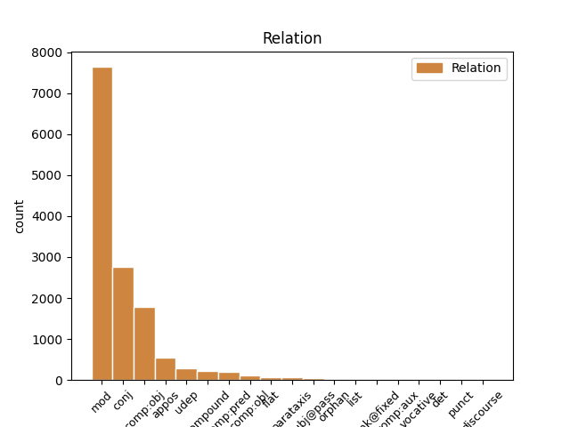
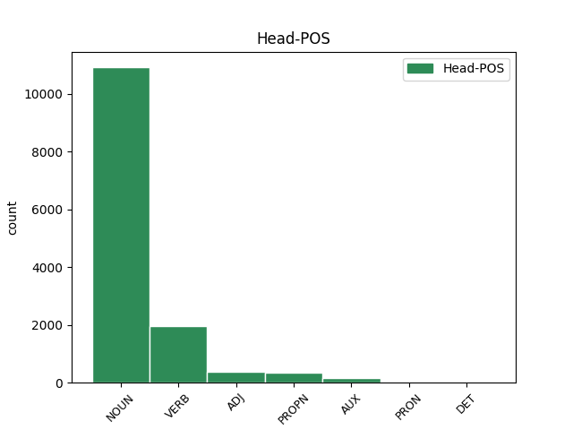
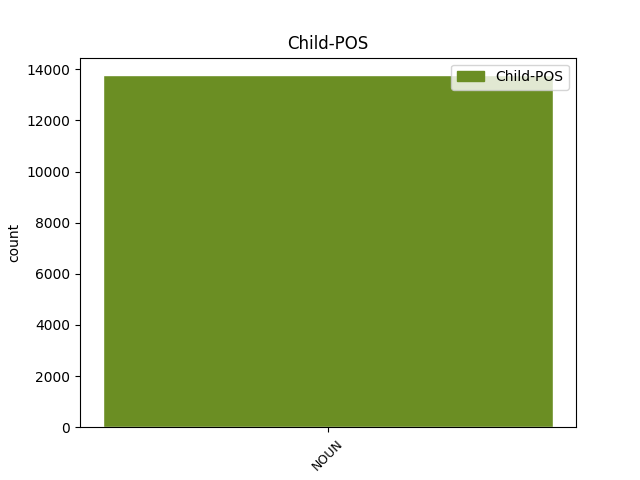

Distribution of features within this leaf



Agreement Rules sorted by frequency.
- When the dependent token is the modifer(mod) of the head token, and the dependent token is NOUN.
1 ( _ _ _ _ 0 _ _ _
2 3 _ _ _ _ 0 _ _ _
3 ) _ _ _ _ 0 _ _ _
4 Za _ _ _ _ 0 _ _ _
5 dio _ _ _ _ 0 _ _ _
6 građevinskog _ _ _ _ 0 _ _ _
7 područja _ _ _ _ 0 _ _ _
8 naselja _ _ _ _ 0 _ _ _
9 Novi _ _ _ _ 0 _ _ _
10 Vinodolski _ _ _ _ 0 _ _ _
11 NA1 _ _ _ _ 0 _ _ _
12 1 _ _ _ _ 0 _ _ _
13 - _ _ _ _ 0 _ _ _
14 registriranu _ _ _ _ 0 _ _ _
15 povijesnu _ _ _ _ 0 _ _ _
16 graditeljsku _ _ _ _ 0 _ _ _
17 cjelinu _ _ _ _ 0 _ _ _
18 , _ _ _ _ 0 _ _ _
19 moguća _ _ _ _ 0 _ _ _
20 su _ _ _ _ 0 _ _ _
21 odstupanja _ _ _ _ 0 _ _ _
22 od _ _ _ _ 0 _ _ _
23 zadanih _ _ _ _ 0 _ _ _
24 graničnih _ _ _ _ 0 _ _ _
25 vrijednosti _ _ _ _ 0 _ _ _
26 navedenih _ _ _ _ 0 _ _ _
27 u _ _ _ _ 0 _ _ _
28 člancima _ _ _ _ 0 _ _ _
29 27. _ _ _ _ 0 _ _ _
30 i _ _ _ _ 0 _ _ _
31 28. _ _ _ _ 0 _ _ _
32 Ovih _ _ _ _ 0 _ _ _
33 Odredbi _ _ _ _ 0 _ _ _
34 ali _ _ _ _ 0 _ _ _
35 samo _ _ _ _ 0 _ _ _
36 u _ _ _ _ 0 _ _ _
37 smislu smisao NOUN Ncmsl Case=Loc|Gender=Masc|Number=Sing 0 _ _ _
38 uvjeta uvjet NOUN Ncmpg Case=Gen|Gender=Masc|Number=Plur 37 mod _ _
39 određenih _ _ _ _ 0 _ _ _
40 od _ _ _ _ 0 _ _ _
41 nadležnog _ _ _ _ 0 _ _ _
42 Konzervatorskog _ _ _ _ 0 _ _ _
43 odjela _ _ _ _ 0 _ _ _
44 ( _ _ _ _ 0 _ _ _
45 označeno _ _ _ _ 0 _ _ _
46 kao _ _ _ _ 0 _ _ _
47 gradsko _ _ _ _ 0 _ _ _
48 naselje _ _ _ _ 0 _ _ _
49 - _ _ _ _ 0 _ _ _
50 zone _ _ _ _ 0 _ _ _
51 14 _ _ _ _ 0 _ _ _
52 A _ _ _ _ 0 _ _ _
53 i _ _ _ _ 0 _ _ _
54 14 _ _ _ _ 0 _ _ _
55 B _ _ _ _ 0 _ _ _
56 na _ _ _ _ 0 _ _ _
57 kartografskom _ _ _ _ 0 _ _ _
58 prikazu _ _ _ _ 0 _ _ _
59 br. _ _ _ _ 0 _ _ _
60 4.1. _ _ _ _ 0 _ _ _
61 » _ _ _ _ 0 _ _ _
62 Građevinska _ _ _ _ 0 _ _ _
63 područja _ _ _ _ 0 _ _ _
64 « _ _ _ _ 0 _ _ _
65 u _ _ _ _ 0 _ _ _
66 mjerilu _ _ _ _ 0 _ _ _
67 1:5000 _ _ _ _ 0 _ _ _
68 ) _ _ _ _ 0 _ _ _
69 . _ _ _ _ 0 _ _ _
1 Inače _ _ _ _ 0 _ _ _
2 , _ _ _ _ 0 _ _ _
3 od _ _ _ _ 0 _ _ _
4 početka _ _ _ _ 0 _ _ _
5 re-emitiranja _ _ _ _ 0 _ _ _
6 serije _ _ _ _ 0 _ _ _
7 2002. _ _ _ _ 0 _ _ _
8 Top _ _ _ _ 0 _ _ _
9 Gear _ _ _ _ 0 _ _ _
10 je _ _ _ _ 0 _ _ _
11 imao _ _ _ _ 0 _ _ _
12 18 _ _ _ _ 0 _ _ _
13 sezona sezona NOUN Ncfpg Case=Gen|Gender=Fem|Number=Plur 0 _ _ _
14 i _ _ _ _ 0 _ _ _
15 147 _ _ _ _ 0 _ _ _
16 epizoda epizoda NOUN Ncfpg Case=Gen|Gender=Fem|Number=Plur 13 conj _ SpaceAfter=No
17 , _ _ _ _ 0 _ _ _
18 a _ _ _ _ 0 _ _ _
19 njihova _ _ _ _ 0 _ _ _
20 Facebook _ _ _ _ 0 _ _ _
21 stranica _ _ _ _ 0 _ _ _
22 trenutno _ _ _ _ 0 _ _ _
23 ima _ _ _ _ 0 _ _ _
24 12,1 _ _ _ _ 0 _ _ _
25 milijun _ _ _ _ 0 _ _ _
26 likeova _ _ _ _ 0 _ _ _
27 . _ _ _ _ 0 _ _ _
1 Ovaj _ _ _ _ 0 _ _ _
2 energetski _ _ _ _ 0 _ _ _
3 kontinuum kontinuum NOUN Ncmsan Animacy=Inan|Case=Acc|Gender=Masc|Number=Sing 13 comp:obj _ SpaceAfter=No
4 , _ _ _ _ 0 _ _ _
5 zbog _ _ _ _ 0 _ _ _
6 svog _ _ _ _ 0 _ _ _
7 strogog _ _ _ _ 0 _ _ _
8 kartezijanizma _ _ _ _ 0 _ _ _
9 , _ _ _ _ 0 _ _ _
10 Newton _ _ _ _ 0 _ _ _
11 ne _ _ _ _ 0 _ _ _
12 bi _ _ _ _ 0 _ _ _
13 priznao priznati VERB Vmp-sm Gender=Masc|Number=Sing|Tense=Past|VerbForm=Part|Voice=Act 0 _ _ _
14 , _ _ _ _ 0 _ _ _
15 jer _ _ _ _ 0 _ _ _
16 je _ _ _ _ 0 _ _ _
17 toplinu _ _ _ _ 0 _ _ _
18 , _ _ _ _ 0 _ _ _
19 kao _ _ _ _ 0 _ _ _
20 sekundarno _ _ _ _ 0 _ _ _
21 svojstvo _ _ _ _ 0 _ _ _
22 , _ _ _ _ 0 _ _ _
23 smatrao _ _ _ _ 0 _ _ _
24 nestvarnom _ _ _ _ 0 _ _ _
25 , _ _ _ _ 0 _ _ _
26 odnosno _ _ _ _ 0 _ _ _
27 prividom _ _ _ _ 0 _ _ _
28 svodivim _ _ _ _ 0 _ _ _
29 na _ _ _ _ 0 _ _ _
30 mehanička _ _ _ _ 0 _ _ _
31 svojstva _ _ _ _ 0 _ _ _
32 . _ _ _ _ 0 _ _ _
1 Kako _ _ _ _ 0 _ _ _
2 u _ _ _ _ 0 _ _ _
3 svom _ _ _ _ 0 _ _ _
4 priopćenju _ _ _ _ 0 _ _ _
5 napominju _ _ _ _ 0 _ _ _
6 iz _ _ _ _ 0 _ _ _
7 Spona spona NOUN Ncfsn Case=Nom|Gender=Fem|Number=Sing 0 _ _ _
8 komunikacija komunikacija NOUN Ncfpg Case=Gen|Gender=Fem|Number=Plur 7 appos _ SpaceAfter=No
9 , _ _ _ _ 0 _ _ _
10 u _ _ _ _ 0 _ _ _
11 tekstu _ _ _ _ 0 _ _ _
12 se _ _ _ _ 0 _ _ _
13 navodi _ _ _ _ 0 _ _ _
14 da _ _ _ _ 0 _ _ _
15 su _ _ _ _ 0 _ _ _
16 Irska _ _ _ _ 0 _ _ _
17 i _ _ _ _ 0 _ _ _
18 Poljska _ _ _ _ 0 _ _ _
19 jedne _ _ _ _ 0 _ _ _
20 od _ _ _ _ 0 _ _ _
21 rijetkih _ _ _ _ 0 _ _ _
22 zemalja _ _ _ _ 0 _ _ _
23 u _ _ _ _ 0 _ _ _
24 kojima _ _ _ _ 0 _ _ _
25 je _ _ _ _ 0 _ _ _
26 ova _ _ _ _ 0 _ _ _
27 pilula _ _ _ _ 0 _ _ _
28 posve _ _ _ _ 0 _ _ _
29 zabranjena _ _ _ _ 0 _ _ _
30 , _ _ _ _ 0 _ _ _
31 što _ _ _ _ 0 _ _ _
32 je _ _ _ _ 0 _ _ _
33 netočno _ _ _ _ 0 _ _ _
34 , _ _ _ _ 0 _ _ _
35 jer _ _ _ _ 0 _ _ _
36 je _ _ _ _ 0 _ _ _
37 pilula _ _ _ _ 0 _ _ _
38 indicirana _ _ _ _ 0 _ _ _
39 na _ _ _ _ 0 _ _ _
40 hitnu _ _ _ _ 0 _ _ _
41 kontracepciju _ _ _ _ 0 _ _ _
42 , _ _ _ _ 0 _ _ _
43 koja _ _ _ _ 0 _ _ _
44 sadrži _ _ _ _ 0 _ _ _
45 levonorgestrel _ _ _ _ 0 _ _ _
46 , _ _ _ _ 0 _ _ _
47 dostupna _ _ _ _ 0 _ _ _
48 u _ _ _ _ 0 _ _ _
49 obje _ _ _ _ 0 _ _ _
50 države _ _ _ _ 0 _ _ _
51 , _ _ _ _ 0 _ _ _
52 gdje _ _ _ _ 0 _ _ _
53 se _ _ _ _ 0 _ _ _
54 prodaje _ _ _ _ 0 _ _ _
55 u _ _ _ _ 0 _ _ _
56 ljekarnama _ _ _ _ 0 _ _ _
57 na _ _ _ _ 0 _ _ _
58 liječnički _ _ _ _ 0 _ _ _
59 recept _ _ _ _ 0 _ _ _
60 , _ _ _ _ 0 _ _ _
61 kao _ _ _ _ 0 _ _ _
62 što _ _ _ _ 0 _ _ _
63 je _ _ _ _ 0 _ _ _
64 to _ _ _ _ 0 _ _ _
65 od _ _ _ _ 0 _ _ _
66 danas _ _ _ _ 0 _ _ _
67 moguće _ _ _ _ 0 _ _ _
68 i _ _ _ _ 0 _ _ _
69 u _ _ _ _ 0 _ _ _
70 Hrvatskoj _ _ _ _ 0 _ _ _
71 . _ _ _ _ 0 _ _ _
1 Jedino _ _ _ _ 0 _ _ _
2 mi _ _ _ _ 0 _ _ _
3 se _ _ _ _ 0 _ _ _
4 činilo _ _ _ _ 0 _ _ _
5 da _ _ _ _ 0 _ _ _
6 je _ _ _ _ 0 _ _ _
7 u _ _ _ _ 0 _ _ _
8 njima _ _ _ _ 0 _ _ _
9 puno _ _ _ _ 0 _ _ _
10 više _ _ _ _ 0 _ _ _
11 tuge _ _ _ _ 0 _ _ _
12 nego _ _ _ _ 0 _ _ _
13 kada _ _ _ _ 0 _ _ _
14 je _ _ _ _ 0 _ _ _
15 bila biti AUX Vap-sf Gender=Fem|Number=Sing|Tense=Past|VerbForm=Part|Voice=Act 0 _ _ _
16 djevojčica djevojčica NOUN Ncfsn Case=Nom|Gender=Fem|Number=Sing 15 comp:pred _ SpaceAfter=No
17 . _ _ _ _ 0 _ _ _
1 Predstavnici _ _ _ _ 0 _ _ _
2 vladajućih _ _ _ _ 0 _ _ _
3 struktura _ _ _ _ 0 _ _ _
4 u _ _ _ _ 0 _ _ _
5 nastalom _ _ _ _ 0 _ _ _
6 postdomovinskom _ _ _ _ 0 _ _ _
7 siromaštvu _ _ _ _ 0 _ _ _
8 nisu _ _ _ _ 0 _ _ _
9 prihvaćali _ _ _ _ 0 _ _ _
10 snositi _ _ _ _ 0 _ _ _
11 zajednički _ _ _ _ 0 _ _ _
12 teret _ _ _ _ 0 _ _ _
13 neimaštine _ _ _ _ 0 _ _ _
14 , _ _ _ _ 0 _ _ _
15 pa _ _ _ _ 0 _ _ _
16 se _ _ _ _ 0 _ _ _
17 počelo početi VERB Vmp-sn Gender=Neut|Number=Sing|Tense=Past|VerbForm=Part|Voice=Act 0 _ _ _
18 izdvajanjem izdvajanje NOUN Ncnsi Case=Ins|Gender=Neut|Number=Sing 17 udep _ _
19 najprije _ _ _ _ 0 _ _ _
20 zastupnika _ _ _ _ 0 _ _ _
21 , _ _ _ _ 0 _ _ _
22 pa _ _ _ _ 0 _ _ _
23 državnih _ _ _ _ 0 _ _ _
24 dužnosnika _ _ _ _ 0 _ _ _
25 a _ _ _ _ 0 _ _ _
26 onda _ _ _ _ 0 _ _ _
27 i _ _ _ _ 0 _ _ _
28 drugih _ _ _ _ 0 _ _ _
29 koji _ _ _ _ 0 _ _ _
30 su _ _ _ _ 0 _ _ _
31 isticali _ _ _ _ 0 _ _ _
32 svoje _ _ _ _ 0 _ _ _
33 zasluge _ _ _ _ 0 _ _ _
34 za _ _ _ _ 0 _ _ _
35 koje _ _ _ _ 0 _ _ _
36 su _ _ _ _ 0 _ _ _
37 tražili _ _ _ _ 0 _ _ _
38 povoljnija _ _ _ _ 0 _ _ _
39 mirovinska _ _ _ _ 0 _ _ _
40 i _ _ _ _ 0 _ _ _
41 socijalna _ _ _ _ 0 _ _ _
42 prava _ _ _ _ 0 _ _ _
43 . _ _ _ _ 0 _ _ _
1 Druga _ _ _ _ 0 _ _ _
2 dva _ _ _ _ 0 _ _ _
3 nastavka _ _ _ _ 0 _ _ _
4 feljtona _ _ _ _ 0 _ _ _
5 - _ _ _ _ 0 _ _ _
6 " _ _ _ _ 0 _ _ _
7 Nespremna nespreman ADJ Agpfsny Case=Nom|Definite=Def|Degree=Pos|Gender=Fem|Number=Sing 0 _ _ _
8 za _ _ _ _ 0 _ _ _
9 životnu _ _ _ _ 0 _ _ _
10 ulogu uloga NOUN Ncfsa Case=Acc|Gender=Fem|Number=Sing 7 compound _ SpaceAfter=No
11 " _ _ _ _ 0 _ _ _
12 i _ _ _ _ 0 _ _ _
13 " _ _ _ _ 0 _ _ _
14 Priča _ _ _ _ 0 _ _ _
15 o _ _ _ _ 0 _ _ _
16 dva _ _ _ _ 0 _ _ _
17 grada _ _ _ _ 0 _ _ _
18 " _ _ _ _ 0 _ _ _
19 , _ _ _ _ 0 _ _ _
20 spekuliraju _ _ _ _ 0 _ _ _
21 izdaleka _ _ _ _ 0 _ _ _
22 o _ _ _ _ 0 _ _ _
23 nekim _ _ _ _ 0 _ _ _
24 njenim _ _ _ _ 0 _ _ _
25 intimnim _ _ _ _ 0 _ _ _
26 vezama _ _ _ _ 0 _ _ _
27 , _ _ _ _ 0 _ _ _
28 pa _ _ _ _ 0 _ _ _
29 Ekspertni _ _ _ _ 0 _ _ _
30 tim _ _ _ _ 0 _ _ _
31 postavlja _ _ _ _ 0 _ _ _
32 pitanje _ _ _ _ 0 _ _ _
33 " _ _ _ _ 0 _ _ _
34 zašto _ _ _ _ 0 _ _ _
35 su _ _ _ _ 0 _ _ _
36 samoubilačka _ _ _ _ 0 _ _ _
37 raspoloženja _ _ _ _ 0 _ _ _
38 dolazila _ _ _ _ 0 _ _ _
39 neposredno _ _ _ _ 0 _ _ _
40 nakon _ _ _ _ 0 _ _ _
41 najvećih _ _ _ _ 0 _ _ _
42 priznanja _ _ _ _ 0 _ _ _
43 ili _ _ _ _ 0 _ _ _
44 ostvarenja _ _ _ _ 0 _ _ _
45 ljubavnih _ _ _ _ 0 _ _ _
46 veza _ _ _ _ 0 _ _ _
47 kojima _ _ _ _ 0 _ _ _
48 je _ _ _ _ 0 _ _ _
49 toliko _ _ _ _ 0 _ _ _
50 težila _ _ _ _ 0 _ _ _
51 ? _ _ _ _ 0 _ _ _
52 " _ _ _ _ 0 _ _ _
1 Takvo _ _ _ _ 0 _ _ _
2 neugodno _ _ _ _ 0 _ _ _
3 iznenađenje _ _ _ _ 0 _ _ _
4 je _ _ _ _ 0 _ _ _
5 doživjela _ _ _ _ 0 _ _ _
6 grupa _ _ _ _ 0 _ _ _
7 gledatelja _ _ _ _ 0 _ _ _
8 koja _ _ _ _ 0 _ _ _
9 se _ _ _ _ 0 _ _ _
10 unezvijereno _ _ _ _ 0 _ _ _
11 sjatila _ _ _ _ 0 _ _ _
12 na _ _ _ _ 0 _ _ _
13 kinoblagajnu _ _ _ _ 0 _ _ _
14 liverpoolskog _ _ _ _ 0 _ _ _
15 Odeon Odeon PROPN Npmsn Case=Nom|Gender=Masc|Number=Sing 0 _ _ _
16 cineplexa cineplex NOUN Ncmsg Case=Gen|Gender=Masc|Number=Sing 15 flat _ _
17 tražeći _ _ _ _ 0 _ _ _
18 povrat _ _ _ _ 0 _ _ _
19 novaca _ _ _ _ 0 _ _ _
20 od _ _ _ _ 0 _ _ _
21 izbezumljenih _ _ _ _ 0 _ _ _
22 prodavača _ _ _ _ 0 _ _ _
23 zbog _ _ _ _ 0 _ _ _
24 toga _ _ _ _ 0 _ _ _
25 što _ _ _ _ 0 _ _ _
26 u _ _ _ _ 0 _ _ _
27 cijelom _ _ _ _ 0 _ _ _
28 filmu _ _ _ _ 0 _ _ _
29 Umjetnik _ _ _ _ 0 _ _ _
30 glumci _ _ _ _ 0 _ _ _
31 nisu _ _ _ _ 0 _ _ _
32 prozborili _ _ _ _ 0 _ _ _
33 niti _ _ _ _ 0 _ _ _
34 jednu _ _ _ _ 0 _ _ _
35 jedninu _ _ _ _ 0 _ _ _
36 riječ _ _ _ _ 0 _ _ _
37 . _ _ _ _ 0 _ _ _
1 Prije _ _ _ _ 0 _ _ _
2 nekoliko _ _ _ _ 0 _ _ _
3 dana _ _ _ _ 0 _ _ _
4 također _ _ _ _ 0 _ _ _
5 je _ _ _ _ 0 _ _ _
6 liječnici _ _ _ _ 0 _ _ _
7 koja _ _ _ _ 0 _ _ _
8 pomaže _ _ _ _ 0 _ _ _
9 unesrećenima _ _ _ _ 0 _ _ _
10 rekao _ _ _ _ 0 _ _ _
11 kako _ _ _ _ 0 _ _ _
12 bi _ _ _ _ 0 _ _ _
13 on _ _ _ _ 0 _ _ _
14 volio _ _ _ _ 0 _ _ _
15 ' _ _ _ _ 0 _ _ _
16 da _ _ _ _ 0 _ _ _
17 mu _ _ _ _ 0 _ _ _
18 daje _ _ _ _ 0 _ _ _
19 usta _ _ _ _ 0 _ _ _
20 na _ _ _ _ 0 _ _ _
21 usta _ _ _ _ 0 _ _ _
22 ' _ _ _ _ 0 _ _ _
23 , _ _ _ _ 0 _ _ _
24 te _ _ _ _ 0 _ _ _
25 je _ _ _ _ 0 _ _ _
26 poručio poručiti VERB Vmp-sm Gender=Masc|Number=Sing|Tense=Past|VerbForm=Part|Voice=Act 0 _ _ _
27 ljudima čovjek NOUN Ncmpi Case=Ins|Gender=Masc|Number=Plur 26 comp:obl _ _
28 koji _ _ _ _ 0 _ _ _
29 su _ _ _ _ 0 _ _ _
30 ostali _ _ _ _ 0 _ _ _
31 bez _ _ _ _ 0 _ _ _
32 domova _ _ _ _ 0 _ _ _
33 ' _ _ _ _ 0 _ _ _
34 neka _ _ _ _ 0 _ _ _
35 to _ _ _ _ 0 _ _ _
36 shvate _ _ _ _ 0 _ _ _
37 kao _ _ _ _ 0 _ _ _
38 kampiranje _ _ _ _ 0 _ _ _
39 ' _ _ _ _ 0 _ _ _
40 . _ _ _ _ 0 _ _ _
1 U _ _ _ _ 0 _ _ _
2 antici _ _ _ _ 0 _ _ _
3 se _ _ _ _ 0 _ _ _
4 silno _ _ _ _ 0 _ _ _
5 cijenila cijeniti VERB Vmp-sf Gender=Fem|Number=Sing|Tense=Past|VerbForm=Part|Voice=Act 0 _ _ _
6 njegova _ _ _ _ 0 _ _ _
7 snaga snaga NOUN Ncfsn Case=Nom|Gender=Fem|Number=Sing 5 subj@pass _ _
8 kod _ _ _ _ 0 _ _ _
9 ubrzanja _ _ _ _ 0 _ _ _
10 rada _ _ _ _ 0 _ _ _
11 bubrega _ _ _ _ 0 _ _ _
12 i _ _ _ _ 0 _ _ _
13 mjehura _ _ _ _ 0 _ _ _
14 , _ _ _ _ 0 _ _ _
15 dok _ _ _ _ 0 _ _ _
16 je _ _ _ _ 0 _ _ _
17 danas _ _ _ _ 0 _ _ _
18 poznato _ _ _ _ 0 _ _ _
19 da _ _ _ _ 0 _ _ _
20 povoljno _ _ _ _ 0 _ _ _
21 djeluje _ _ _ _ 0 _ _ _
22 i _ _ _ _ 0 _ _ _
23 na _ _ _ _ 0 _ _ _
24 bolesti _ _ _ _ 0 _ _ _
25 jetre _ _ _ _ 0 _ _ _
26 . _ _ _ _ 0 _ _ _
1 Grad _ _ _ _ 0 _ _ _
2 Zagreb _ _ _ _ 0 _ _ _
3 tradicionalno _ _ _ _ 0 _ _ _
4 organizira _ _ _ _ 0 _ _ _
5 maksimirsku _ _ _ _ 0 _ _ _
6 proslavu _ _ _ _ 0 _ _ _
7 , _ _ _ _ 0 _ _ _
8 a _ _ _ _ 0 _ _ _
9 podijelit _ _ _ _ 0 _ _ _
10 će _ _ _ _ 0 _ _ _
11 se _ _ _ _ 0 _ _ _
12 50 _ _ _ _ 0 _ _ _
13 tisuća tisuća NOUN Ncfpg Case=Gen|Gender=Fem|Number=Plur 0 _ _ _
14 porcija _ _ _ _ 0 _ _ _
15 graha _ _ _ _ 0 _ _ _
16 , _ _ _ _ 0 _ _ _
17 10 _ _ _ _ 0 _ _ _
18 tisuća _ _ _ _ 0 _ _ _
19 više _ _ _ _ 0 _ _ _
20 nego _ _ _ _ 0 _ _ _
21 prošle _ _ _ _ 0 _ _ _
22 godine godina NOUN Ncfsg Case=Gen|Gender=Fem|Number=Sing 13 parataxis _ SpaceAfter=No
23 . _ _ _ _ 0 _ _ _
1 Iako _ _ _ _ 0 _ _ _
2 je _ _ _ _ 0 _ _ _
3 Dalmatinca _ _ _ _ 0 _ _ _
4 nadasve _ _ _ _ 0 _ _ _
5 teško _ _ _ _ 0 _ _ _
6 pobijediti _ _ _ _ 0 _ _ _
7 u _ _ _ _ 0 _ _ _
8 briškuli _ _ _ _ 0 _ _ _
9 , _ _ _ _ 0 _ _ _
10 Zagorca zagorac NOUN Ncmsay Animacy=Anim|Case=Acc|Gender=Masc|Number=Sing 15 orphan _ orig_deprel=obj
11 u _ _ _ _ 0 _ _ _
12 beli _ _ _ _ 0 _ _ _
13 , _ _ _ _ 0 _ _ _
14 a _ _ _ _ 0 _ _ _
15 Baranjca Baranjac PROPN Npmsay Animacy=Anim|Case=Acc|Gender=Masc|Number=Sing 0 _ _ _
16 i _ _ _ _ 0 _ _ _
17 Slavonca _ _ _ _ 0 _ _ _
18 u _ _ _ _ 0 _ _ _
19 spremanju _ _ _ _ 0 _ _ _
20 fišpaprikaša _ _ _ _ 0 _ _ _
21 , _ _ _ _ 0 _ _ _
22 treće _ _ _ _ 0 _ _ _
23 mjesto _ _ _ _ 0 _ _ _
24 ipak _ _ _ _ 0 _ _ _
25 je _ _ _ _ 0 _ _ _
26 osvojila _ _ _ _ 0 _ _ _
27 domaća _ _ _ _ 0 _ _ _
28 ekipa _ _ _ _ 0 _ _ _
29 znakovita _ _ _ _ 0 _ _ _
30 imena _ _ _ _ 0 _ _ _
31 " _ _ _ _ 0 _ _ _
32 Bilo _ _ _ _ 0 _ _ _
33 mi _ _ _ _ 0 _ _ _
34 je _ _ _ _ 0 _ _ _
35 vrime _ _ _ _ 0 _ _ _
36 " _ _ _ _ 0 _ _ _
37 za _ _ _ _ 0 _ _ _
38 koju _ _ _ _ 0 _ _ _
39 su _ _ _ _ 0 _ _ _
40 kuhali _ _ _ _ 0 _ _ _
41 Stipe _ _ _ _ 0 _ _ _
42 Jerković _ _ _ _ 0 _ _ _
43 i _ _ _ _ 0 _ _ _
44 Mate _ _ _ _ 0 _ _ _
45 Katuša _ _ _ _ 0 _ _ _
1 Priča _ _ _ _ 0 _ _ _
2 2 _ _ _ _ 0 _ _ _
3 : _ _ _ _ 0 _ _ _
4 Pacho _ _ _ _ 0 _ _ _
5 je _ _ _ _ 0 _ _ _
6 više _ _ _ _ 0 _ _ _
7 od _ _ _ _ 0 _ _ _
8 20 _ _ _ _ 0 _ _ _
9 godina _ _ _ _ 0 _ _ _
10 korišten _ _ _ _ 0 _ _ _
11 za _ _ _ _ 0 _ _ _
12 školu _ _ _ _ 0 _ _ _
13 jahanja _ _ _ _ 0 _ _ _
14 i _ _ _ _ 0 _ _ _
15 sinjsku _ _ _ _ 0 _ _ _
16 alku _ _ _ _ 0 _ _ _
17 , _ _ _ _ 0 _ _ _
18 jer _ _ _ _ 0 _ _ _
19 je _ _ _ _ 0 _ _ _
20 zbog _ _ _ _ 0 _ _ _
21 izuzetne _ _ _ _ 0 _ _ _
22 inteligencije _ _ _ _ 0 _ _ _
23 i _ _ _ _ 0 _ _ _
24 krotkosti _ _ _ _ 0 _ _ _
25 bio _ _ _ _ 0 _ _ _
26 pogodan _ _ _ _ 0 _ _ _
27 i _ _ _ _ 0 _ _ _
28 za _ _ _ _ 0 _ _ _
29 malo _ _ _ _ 0 _ _ _
30 dijete _ _ _ _ 0 _ _ _
31 i _ _ _ _ 0 _ _ _
32 za _ _ _ _ 0 _ _ _
33 neukog _ _ _ _ 0 _ _ _
34 , _ _ _ _ 0 _ _ _
35 priučenog _ _ _ _ 0 _ _ _
36 jahača _ _ _ _ 0 _ _ _
37 , _ _ _ _ 0 _ _ _
38 koji _ _ _ _ 0 _ _ _
39 je _ _ _ _ 0 _ _ _
40 silom sila NOUN Ncfsi Case=Ins|Gender=Fem|Number=Sing 0 _ _ _
41 prilika prilika NOUN Ncfpg Case=Gen|Gender=Fem|Number=Plur 40 unk@fixed _ _
42 sjeo _ _ _ _ 0 _ _ _
43 na _ _ _ _ 0 _ _ _
44 konja _ _ _ _ 0 _ _ _
45 da _ _ _ _ 0 _ _ _
46 održi _ _ _ _ 0 _ _ _
47 govor _ _ _ _ 0 _ _ _
48 . _ _ _ _ 0 _ _ _
1 Gostima _ _ _ _ 0 _ _ _
2 je _ _ _ _ 0 _ _ _
3 na _ _ _ _ 0 _ _ _
4 raspolaganju _ _ _ _ 0 _ _ _
5 : _ _ _ _ 0 _ _ _
6 perilica perilica NOUN Ncfsn Case=Nom|Gender=Fem|Number=Sing 0 _ _ _
7 posuđa _ _ _ _ 0 _ _ _
8 , _ _ _ _ 0 _ _ _
9 toster _ _ _ _ 0 _ _ _
10 , _ _ _ _ 0 _ _ _
11 mikrovalna _ _ _ _ 0 _ _ _
12 pećnica _ _ _ _ 0 _ _ _
13 , _ _ _ _ 0 _ _ _
14 pegla pegla NOUN Ncfsn Case=Nom|Gender=Fem|Number=Sing 6 list _ _
15 i _ _ _ _ 0 _ _ _
16 daska _ _ _ _ 0 _ _ _
17 za _ _ _ _ 0 _ _ _
18 peglanje _ _ _ _ 0 _ _ _
19 , _ _ _ _ 0 _ _ _
20 Internet _ _ _ _ 0 _ _ _
21 priključak _ _ _ _ 0 _ _ _
22 . _ _ _ _ 0 _ _ _
1 Kad _ _ _ _ 0 _ _ _
2 je _ _ _ _ 0 _ _ _
3 postao _ _ _ _ 0 _ _ _
4 predsjednik _ _ _ _ 0 _ _ _
5 , _ _ _ _ 0 _ _ _
6 obično _ _ _ _ 0 _ _ _
7 pismo _ _ _ _ 0 _ _ _
8 koje _ _ _ _ 0 _ _ _
9 su _ _ _ _ 0 _ _ _
10 mu _ _ _ _ 0 _ _ _
11 generali _ _ _ _ 0 _ _ _
12 uputili _ _ _ _ 0 _ _ _
13 videći _ _ _ _ 0 _ _ _
14 da _ _ _ _ 0 _ _ _
15 ruši _ _ _ _ 0 _ _ _
16 ono _ _ _ _ 0 _ _ _
17 za _ _ _ _ 0 _ _ _
18 što _ _ _ _ 0 _ _ _
19 su _ _ _ _ 0 _ _ _
20 se _ _ _ _ 0 _ _ _
21 oni _ _ _ _ 0 _ _ _
22 borili _ _ _ _ 0 _ _ _
23 , _ _ _ _ 0 _ _ _
24 proglasio _ _ _ _ 0 _ _ _
25 je _ _ _ _ 0 _ _ _
26 DRŽAVNIM državni ADJ Agpmsiy Case=Ins|Definite=Def|Degree=Pos|Gender=Masc|Number=Sing 0 _ _ _
27 UDAROM udar NOUN Ncmsi Case=Ins|Gender=Masc|Number=Sing 26 comp:aux _ _
28 i _ _ _ _ 0 _ _ _
29 bavljenjem _ _ _ _ 0 _ _ _
30 politikom _ _ _ _ 0 _ _ _
31 . _ _ _ _ 0 _ _ _
1 Gospodine gospodin NOUN Ncmsv Case=Voc|Gender=Masc|Number=Sing 0 _ _ _
2 gradonačelniče gradonačelnik NOUN Ncmsv Case=Voc|Gender=Masc|Number=Sing 1 vocative _ SpaceAfter=No
3 , _ _ _ _ 0 _ _ _
4 podsjećamo _ _ _ _ 0 _ _ _
5 Vas _ _ _ _ 0 _ _ _
6 da _ _ _ _ 0 _ _ _
7 se _ _ _ _ 0 _ _ _
8 je _ _ _ _ 0 _ _ _
9 , _ _ _ _ 0 _ _ _
10 dok _ _ _ _ 0 _ _ _
11 Vi _ _ _ _ 0 _ _ _
12 dijelite _ _ _ _ 0 _ _ _
13 ruže _ _ _ _ 0 _ _ _
14 , _ _ _ _ 0 _ _ _
15 nevažno _ _ _ _ 0 _ _ _
16 plaćene _ _ _ _ 0 _ _ _
17 čijim _ _ _ _ 0 _ _ _
18 novcem _ _ _ _ 0 _ _ _
19 , _ _ _ _ 0 _ _ _
20 jedino _ _ _ _ 0 _ _ _
21 gradsko _ _ _ _ 0 _ _ _
22 sklonište _ _ _ _ 0 _ _ _
23 za _ _ _ _ 0 _ _ _
24 pretučene _ _ _ _ 0 _ _ _
25 žene _ _ _ _ 0 _ _ _
26 našlo _ _ _ _ 0 _ _ _
27 pred _ _ _ _ 0 _ _ _
28 zatvaranjem _ _ _ _ 0 _ _ _
29 , _ _ _ _ 0 _ _ _
30 jer _ _ _ _ 0 _ _ _
31 Vi _ _ _ _ 0 _ _ _
32 niste _ _ _ _ 0 _ _ _
33 bili _ _ _ _ 0 _ _ _
34 u _ _ _ _ 0 _ _ _
35 stanju _ _ _ _ 0 _ _ _
36 izdvojiti _ _ _ _ 0 _ _ _
37 otprilike _ _ _ _ 0 _ _ _
38 istu _ _ _ _ 0 _ _ _
39 sumu _ _ _ _ 0 _ _ _
40 koju _ _ _ _ 0 _ _ _
41 ste _ _ _ _ 0 _ _ _
42 dali _ _ _ _ 0 _ _ _
43 za _ _ _ _ 0 _ _ _
44 te _ _ _ _ 0 _ _ _
45 ruže _ _ _ _ 0 _ _ _
46 i _ _ _ _ 0 _ _ _
47 kavice _ _ _ _ 0 _ _ _
48 s _ _ _ _ 0 _ _ _
49 gradonačelnikom _ _ _ _ 0 _ _ _
50 . _ _ _ _ 0 _ _ _
1 Najznačajniji _ _ _ _ 0 _ _ _
2 datum _ _ _ _ 0 _ _ _
3 Francuske _ _ _ _ 0 _ _ _
4 Republike _ _ _ _ 0 _ _ _
5 jest _ _ _ _ 0 _ _ _
6 14. _ _ _ _ 0 _ _ _
7 07. _ _ _ _ 0 _ _ _
8 1789. _ _ _ _ 0 _ _ _
9 godine _ _ _ _ 0 _ _ _
10 , _ _ _ _ 0 _ _ _
11 kada _ _ _ _ 0 _ _ _
12 je _ _ _ _ 0 _ _ _
13 jurišem _ _ _ _ 0 _ _ _
14 revolucionarnih _ _ _ _ 0 _ _ _
15 snaga _ _ _ _ 0 _ _ _
16 osvojena _ _ _ _ 0 _ _ _
17 zloglasna _ _ _ _ 0 _ _ _
18 tvrđava tvrđava NOUN Ncfsn Case=Nom|Gender=Fem|Number=Sing 0 _ _ _
19 Bastille _ _ _ _ 0 _ _ _
20 , _ _ _ _ 0 _ _ _
21 tamnica tamnica NOUN Ncfsn Case=Nom|Gender=Fem|Number=Sing 18 punct _ _
22 u _ _ _ _ 0 _ _ _
23 pariškom _ _ _ _ 0 _ _ _
24 predgrađu _ _ _ _ 0 _ _ _
25 Saint _ _ _ _ 0 _ _ _
26 Antoine _ _ _ _ 0 _ _ _
27 . _ _ _ _ 0 _ _ _
Disagree Examples:
1 Kazna kazna NOUN Ncfsn Case=Nom|Gender=Fem|Number=Sing 0 _ _ _
2 medijskom _ _ _ _ 0 _ _ _
3 mogulu mogul NOUN Ncmsd Case=Dat|Gender=Masc|Number=Sing 1 mod _ _
4 obnovila _ _ _ _ 0 _ _ _
5 raspravu _ _ _ _ 0 _ _ _
6 u _ _ _ _ 0 _ _ _
7 Makedoniji _ _ _ _ 0 _ _ _
1 Neki _ _ _ _ 0 _ _ _
2 tvrde _ _ _ _ 0 _ _ _
3 da _ _ _ _ 0 _ _ _
4 je _ _ _ _ 0 _ _ _
5 presuda presuda NOUN Ncfsn Case=Nom|Gender=Fem|Number=Sing 8 mod _ ToDo=nmod
6 Veliji _ _ _ _ 0 _ _ _
7 Ramkovskom _ _ _ _ 0 _ _ _
8 napad napad NOUN Ncmsn Case=Nom|Gender=Masc|Number=Sing 0 _ _ _
9 na _ _ _ _ 0 _ _ _
10 slobodu _ _ _ _ 0 _ _ _
11 medija _ _ _ _ 0 _ _ _
12 , _ _ _ _ 0 _ _ _
13 dok _ _ _ _ 0 _ _ _
14 drugi _ _ _ _ 0 _ _ _
15 tvrde _ _ _ _ 0 _ _ _
16 kako _ _ _ _ 0 _ _ _
17 dokazi _ _ _ _ 0 _ _ _
18 o _ _ _ _ 0 _ _ _
19 njegovim _ _ _ _ 0 _ _ _
20 kaznenim _ _ _ _ 0 _ _ _
21 djelima _ _ _ _ 0 _ _ _
22 govore _ _ _ _ 0 _ _ _
23 suprotno _ _ _ _ 0 _ _ _
24 . _ _ _ _ 0 _ _ _
1 Neki _ _ _ _ 0 _ _ _
2 tvrde _ _ _ _ 0 _ _ _
3 da _ _ _ _ 0 _ _ _
4 je _ _ _ _ 0 _ _ _
5 presuda _ _ _ _ 0 _ _ _
6 Veliji _ _ _ _ 0 _ _ _
7 Ramkovskom _ _ _ _ 0 _ _ _
8 napad _ _ _ _ 0 _ _ _
9 na _ _ _ _ 0 _ _ _
10 slobodu sloboda NOUN Ncfsa Case=Acc|Gender=Fem|Number=Sing 0 _ _ _
11 medija medij NOUN Ncmpg Case=Gen|Gender=Masc|Number=Plur 10 mod _ SpaceAfter=No
12 , _ _ _ _ 0 _ _ _
13 dok _ _ _ _ 0 _ _ _
14 drugi _ _ _ _ 0 _ _ _
15 tvrde _ _ _ _ 0 _ _ _
16 kako _ _ _ _ 0 _ _ _
17 dokazi _ _ _ _ 0 _ _ _
18 o _ _ _ _ 0 _ _ _
19 njegovim _ _ _ _ 0 _ _ _
20 kaznenim _ _ _ _ 0 _ _ _
21 djelima _ _ _ _ 0 _ _ _
22 govore _ _ _ _ 0 _ _ _
23 suprotno _ _ _ _ 0 _ _ _
24 . _ _ _ _ 0 _ _ _
1 Medijski _ _ _ _ 0 _ _ _
2 mogul _ _ _ _ 0 _ _ _
3 Velija _ _ _ _ 0 _ _ _
4 Ramkovski _ _ _ _ 0 _ _ _
5 osuđen _ _ _ _ 0 _ _ _
6 je _ _ _ _ 0 _ _ _
7 na _ _ _ _ 0 _ _ _
8 13 _ _ _ _ 0 _ _ _
9 godina godina NOUN Ncfpg Case=Gen|Gender=Fem|Number=Plur 0 _ _ _
10 zatvora zatvor NOUN Ncmsg Case=Gen|Gender=Masc|Number=Sing 9 mod _ _
11 zbog _ _ _ _ 0 _ _ _
12 utaje _ _ _ _ 0 _ _ _
13 poreza _ _ _ _ 0 _ _ _
14 i _ _ _ _ 0 _ _ _
15 pranja _ _ _ _ 0 _ _ _
16 novca _ _ _ _ 0 _ _ _
17 . _ _ _ _ 0 _ _ _
1 Medijski _ _ _ _ 0 _ _ _
2 mogul _ _ _ _ 0 _ _ _
3 Velija _ _ _ _ 0 _ _ _
4 Ramkovski _ _ _ _ 0 _ _ _
5 osuđen _ _ _ _ 0 _ _ _
6 je _ _ _ _ 0 _ _ _
7 na _ _ _ _ 0 _ _ _
8 13 _ _ _ _ 0 _ _ _
9 godina _ _ _ _ 0 _ _ _
10 zatvora _ _ _ _ 0 _ _ _
11 zbog _ _ _ _ 0 _ _ _
12 utaje utaja NOUN Ncfsg Case=Gen|Gender=Fem|Number=Sing 0 _ _ _
13 poreza porez NOUN Ncmsg Case=Gen|Gender=Masc|Number=Sing 12 mod _ _
14 i _ _ _ _ 0 _ _ _
15 pranja _ _ _ _ 0 _ _ _
16 novca _ _ _ _ 0 _ _ _
17 . _ _ _ _ 0 _ _ _